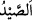
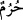
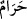

“Ey îman edenler! İhramlı iken av öldürmeyin.” Buradaki “ __WORD__ ” den maksat Ebû
Hânifeye göre eti yensin yenmesin kendisinden faydalanılan bütün yabani hayvanlardır.
Zararlı hayvanlar, yani akrep, yılan, karga, fare ve vahşi köpek bunun dışındadır. Onlar
hem Hill’de (Harem bölgesi dışında) hem de Harem bölgesinde öldürülebilirler.
“__WORD__” kelimesi ise İhramlı kişi (muhrim) anlamındaki “__WORD__” kelimesinin çoğulu
olup; ister Harem sınırları içinde olsun, ister olmasın, ihramlı kişiler için kullanılır.
Harem sınırları içerisinde bulunan kişi de ister ihramlı olsun, ister elbise giymiş olsun
ihramlı hükmündedir. İhramlı kişi ne silah yardımıyla, ne av köpeği ve av kuşu
kullanarak, ne Harem bölgesi dahilinde, ne de dışında kesinlikle avlanamaz.
İhramlı olmayan kişi ise Harem sınırları dışında avlanabilir.Harem sınırları
içerisinde avlanamaz. Burada bahsedilen Harem Mekke Haremi’dir.[44]
Âyette “boğazlamayın” değil “öldürmeyin” buyurulmuştur. Bu avlanacak hayvanın
(leş) hükmünde olacağına işaret etmek içindir. Binaenaleyh ihramlının öldüreceği av
dinen temiz sayılmaz. Temiz olmayan bir hayvanı yemek de câiz değildir. Âyetin
mânâsı: “Siz ihramlı olduğunuz halde av öldürmeyin.” demektir.
“Sizden kim onu kasden öldürürse”, yani siz mü’minlerden, kim mü’min olduğu
halde, ihramlı olduğunu hatırlar ve böyle iken av öldürmenin haram olduğunu bilir, yine
de avı öldürecek olursa, demektir.
Âyetteki bahsedilen “av”, eti yenilsin ya da yenilmesin, bilinen kara av hayvanlarıdır.
“Sizden” buyurulması muhtemelen îmanın gerektirdiği şekilde davranmadığı için
mü’mini kınama mânâsı taşımaktadır. Ardından getirilen “kasden” kaydının zikredilmiş
olması yapılan yanlışın büyüklüğünü göstermek içindir. Böyle bir suçun hataen veya
kasıtlı olarak yapılmış olması, mahzurlarını ortadan kaldırmaz. Aslolan kasten
yapmaktır, hata ise ona tabidir.
Onun üzerine gerekli olan “öldürdüğünün dengi bir hayvan cezâsı vardır” İmam-ı
Azam ve Ebû Yusuf’a göre “öldürdüğüne denk” olmaktan maksat, kıymet açısından
denkliktir. Yoksa hayvanın yaratılış ve görünüşü bakımından denklik değildir. Avlanan
hayvanın kıymeti, avlanıldığı bölgenin ya da alım satım yapılmayan tenha bir yerde
öldürmüşse oraya en yakın bölgenin fiyatlarıyla tesbit edilir. Eğer öldürülen hayvanın
kıymeti bir kurban değerinde olacak olursa öldüren kişi, şu üç şıktan birini seçmekte
serbesttir:
1- Öldürdüğü hayvanın kıymeti olan meblağ ile bir kurban satın alarak Harem’de
kurban etmek,
2- Bu parayla yiyecek satın alarak fakirlere dağıtmak. Bu her fakire yarım sâ’
(yaklaşık 1.5 kg.) buğday ya da bir sâ’ (yaklaşık 3 kg.) hurma verilerek yapılır,
3- Her bir fakire verilecek yiyecek miktarı yerine bir gün oruç tutmak. Bir günlük
yiyecek miktarı tutarı kadar olmayan bir fazlalık (küsürat) söz konusu olursa ya bu
fazlalık tasadduk edilir ya da onun yerine bir günden az oruç olmayacağı için bir tam
gün oruç tutulur.